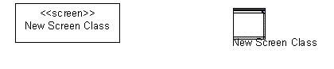
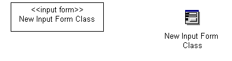

| Руководство по инструменту: Setting Up User Experience Modeling for a Project Using Rational Rose |
 |
|
| Связанные элементы |
|---|
|
The following topics are discussed in this tool mentor. Install the XDE Support FilesTo support user-experience modeling in Rose, a set of custom stereotypes and icons have been provided. These must be installed into Rose prior to modeling the user-experience elements in Rose. The stereotypes and their associated icons are as follows:

 Tool Steps
Create the User-Experience ModelIn this step, you create the Rose model file that will contain the User-Experience Model, using the previously installed stereotypes.
The
Within the created User-Experience Model, create packages to reflect the recommended model structure, as described in
|

© Copyright IBM Corp. 1987, 2006. Все права защищены.. |